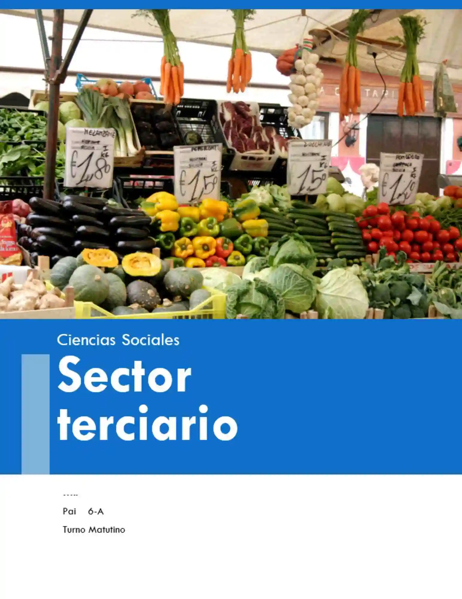
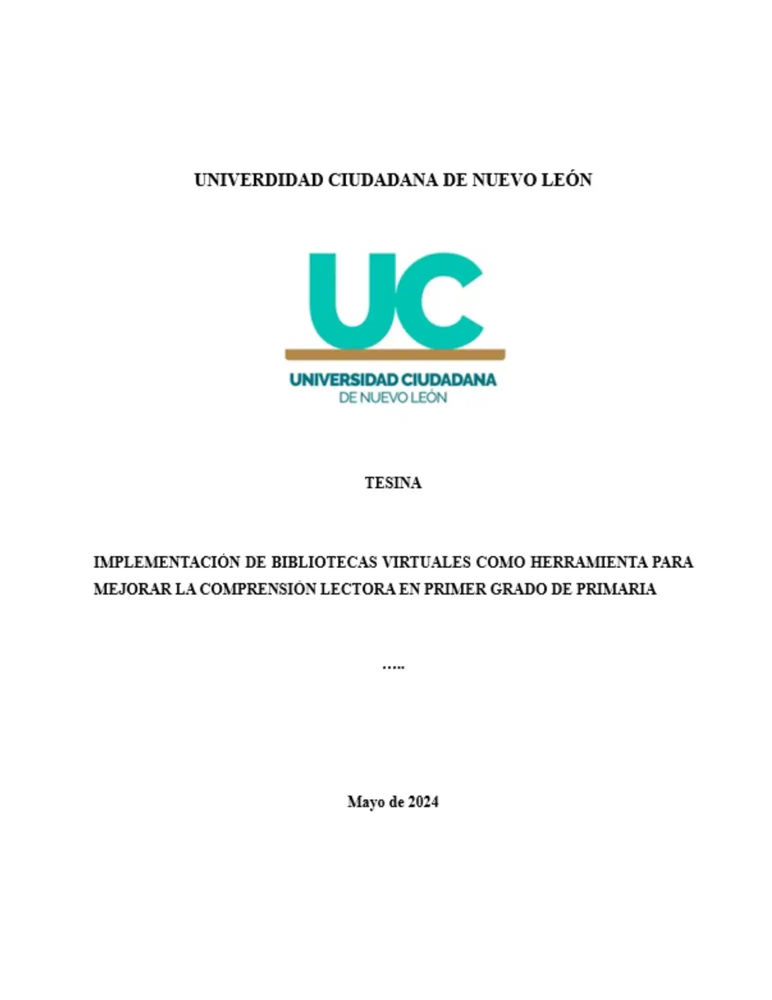
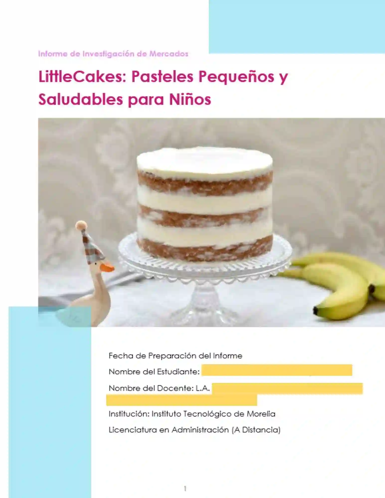
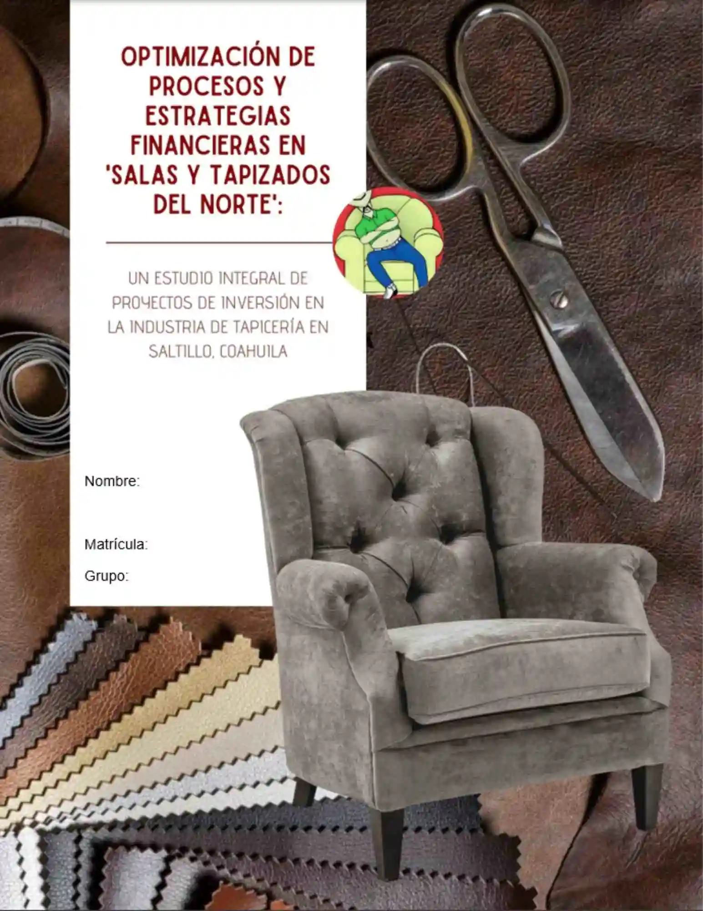
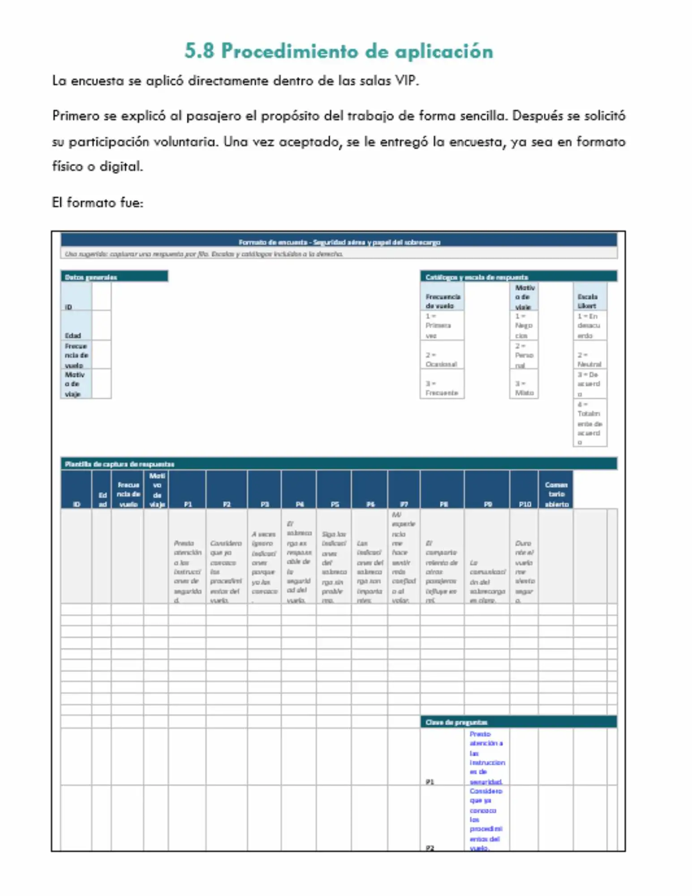
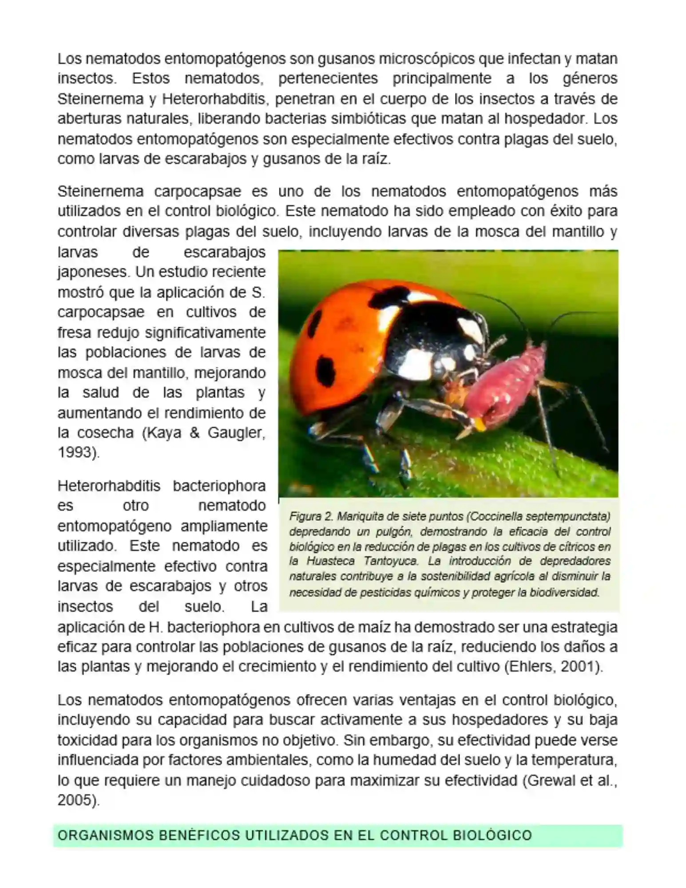

Licenciatura
Apoyo en tesis, tesinas, proyectos de investigación, capítulos, redacción académica y estructura general.
 ¿En qué va tu tesis?
¿En qué va tu tesis?
Si estás desarrollando una tesis, tesina o trabajo recepcional, aquí puedes recibir apoyo en distintas partes del proceso. Se revisa el avance que ya tengas, el tema, el nivel académico, la estructura que te piden y el tiempo disponible para trabajar.
Esta página está enfocada en personas que necesitan ayuda con tesis, tesinas, proyectos de titulación, trabajos recepcionales y documentos académicos extensos. No se trata solo de redactar, sino de entender qué apartado necesitas, qué te pidió tu asesor y cómo aterrizarlo correctamente.
Apoyo en tesis, tesinas, proyectos de investigación, capítulos, redacción académica y estructura general.
Documentos con enfoque técnico, metodológico, análisis, tablas, interpretación de resultados y apartados formales.
Trabajos con mayor profundidad, marco teórico amplio, diseño metodológico, objetivos claros y redacción más formal.
Entregables académicos especializados, protocolos, capítulos, correcciones de estilo y apoyo en presentación del documento.
Apoyo en estructura, desarrollo de apartados, revisión de contenido, coherencia y orden del documento final.
Si aún no llevas todo completo, también se puede apoyar por secciones o por capítulos específicos.
Hay personas que solo necesitan un apartado, otras necesitan reorganizar lo que ya tienen, y otras requieren apoyo desde cero. Por eso esta página está hecha para explicar mejor qué partes de una tesis se pueden revisar y desarrollar.
También sirve para quienes buscan ayuda con tesinas, proyectos recepcionales, trabajos finales de investigación o documentos similares que requieren orden académico y estructura formal.
Redacción del problema, contexto, delimitación, preguntas de investigación y coherencia con el tema central.
Objetivo general, objetivos específicos, justificación y delimitación de acuerdo con lo que pide tu proyecto.
Desarrollo extenso de antecedentes, bases teóricas, conceptos clave, apartados y subapartados del tema.
Diseño metodológico, tipo de investigación, enfoque, población, muestra, instrumentos y procedimiento.
Dependiendo de la escuela o universidad, la tesis puede llevar nombres distintos, pero estas son algunas de las partes más frecuentes que suelen solicitar.
En tesis y tesinas es todavía más importante compartir todo el contexto. No basta con decir “necesito ayuda”; conviene mandar lo que ya tienes y lo que te faltó desarrollar.
Comparte tu tema de tesis, carrera, nivel académico y el tipo de trabajo que te solicitaron.
Si ya tienes capítulos, índice, correcciones del asesor o un documento base, eso ayuda mucho para revisar bien.
Si tu universidad pide estructura específica, formato, extensión o lineamientos de titulación, también conviene enviarlos.
Es necesario saber si el apoyo es para un avance, una entrega parcial, una revisión o un documento más amplio.
Muchas veces el problema no es falta de ganas, sino que no queda claro cómo redactar un objetivo, cómo delimitar el problema, cómo hacer el marco teórico o cómo conectar metodología con resultados.
También pasa mucho que el asesor hace observaciones, pero no siempre explica exactamente cómo corregirlas. Esta página busca responder mejor a esa necesidad.
Aunque muchas personas usan esos términos como si fueran lo mismo, en realidad cada documento tiene una estructura y una profundidad distinta. Por eso primero conviene identificar exactamente qué te pidieron en tu escuela.
A veces no se necesita un documento completo desde cero, sino apoyo en un capítulo, revisión de coherencia, corrección de estilo, ampliación del marco teórico o ayuda con la presentación final.






Sí. De hecho, muchas veces el apoyo es justo sobre un documento que ya existe y necesita correcciones, ampliación o reestructura.
Sí. No siempre tiene que ser toda la tesis. También se puede revisar por apartados específicos según lo que te falte.
Sí. Se revisan temas de distintas áreas académicas, siempre dependiendo del tipo de documento y el enfoque solicitado.
Sí. Se puede apoyar con referencias, citas, orden del documento, estructura y ajustes de presentación académica.
Para revisar bien una tesis o tesina, lo ideal es compartir el tema, el nivel académico, lo que ya llevas, las observaciones del asesor y la fecha de entrega. Así se puede dar una respuesta mucho más clara.
Manda tu tema, índice, documento base, observaciones del asesor o la parte que necesitas trabajar.
Enviar mensajeTambién puedes mandar tu tesis, avances o lineamientos por correo para revisar con más detalle.
Enviar correoSi quieres revisar más contenido o escribir por otro medio, también está la página de Facebook.
Ir a FacebookSi necesitas apoyo con tesis, tesinas, marco teórico, metodología, análisis de resultados, correcciones o formato, puedes compartir tu información y revisar disponibilidad.
Página enfocada en apoyo con tesis, tesinas, capítulos, planteamiento del problema, justificación, objetivos, marco teórico, metodología, análisis de resultados y formato APA.
Atención académica para estudiantes de licenciatura, ingeniería, maestría y especialidad que necesitan apoyo en la elaboración o revisión de tesis.
También se puede apoyar por secciones específicas, avances parciales, reorganización del contenido y correcciones según observaciones del asesor.